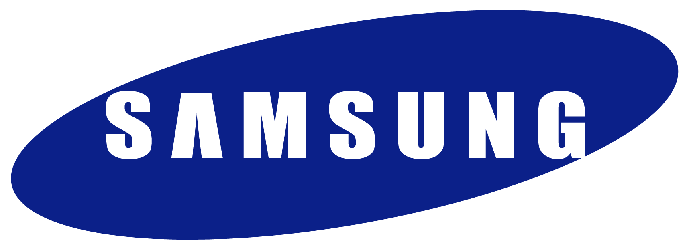
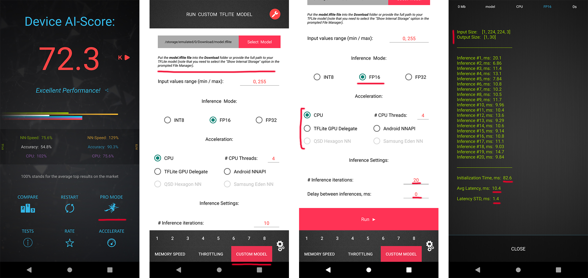

Computer Vision Laboratory, ETH Zurich
Switzerland, 2023
Over the past years, mobile AI-based applications are becoming more and more ubiquitous. Various deep learning models can now be found on any mobile device, starting from smartphones running portrait segmentation, image enhancement, face recognition and natural language processing models, to smart-TV boards coming with sophisticated image super-resolution algorithms. The performance of mobile NPUs and DSPs is also increasing dramatically, making it possible to run complex deep learning models and to achieve fast runtime in the majority of tasks.
While many research works targeted at efficient deep learning models have been proposed recently, the evaluation of the obtained solutions is usually happening on desktop CPUs and GPUs, making it nearly impossible to estimate the actual inference time and memory consumption on real mobile hardware. To address this problem, we introduce the first Mobile AI Workshop, where all deep learning solutions are developed for and evaluated on mobile devices.
Due to the performance of the last-generation mobile AI hardware, the topics considered in this workshop will go beyond the simple classification tasks, and will include such challenging problems as image denoising, HDR photography, accurate depth estimation, learned image ISP pipeline, real-time image and video super-resolution. All information about the challenges, papers, invited talks and workshop industry partners is provided below.
LIVE SESSION IN ZOOM
Join the workshop using the following link ( Password: feltcars )
SCHEDULE

Deep Learning on Mobile Devices: What's New in 2023?
08:00 Pacific Time ┈ Andrey Ignatov ┈ AI Benchmark Project Lead, ETH Zurich
Abstract: In this tutorial, we will review the recent Android AI software stack updates, and will talk about the performance of the latest mobile chipsets from Qualcomm, MediaTek, Google, Samsung and Unisoc released during the past year. We will also discuss the power efficiency of mobile chipsets and their NPUs, and will analyze their energy consumption for a number of typical AI workloads.

Mobile AI Evolution - the Trend and Challenge
08:40 Pacific Time ┈ Hsien-Kai Kuo ┈ Senior Department Manager, MediaTek Inc.
09:00 Pacific Time ┈ Yu-Syuan Xu ┈ Senior AI Engineer, MediaTek Inc.
Abstract: Mobile AI is evolving from short-burst applications like photos to sustained ones such as videos, games, and VR/MR. Recently, Transformer, designed for natural language processing, has become the foundation network of generative AI, and has shown superior performance in vision and voice applications for mobile devices. In this talk, we will introduce mobile AI applications, with a particular focus on the advantages and challenges of utilizing transformers. However, running vision transformer models with higher-resolution data under a limited power budget is the most critical challenge for mobile AI applications. We will set up a vision transformer based video super resolution challenge to promote the efficient deployment of transformer.

Make the World a Clearer Place
09:30 Pacific Time ┈ Lan Fu ┈ Senior Research Engineer, OPPO US R&D
Abstract: Although deep learning based video super-resolution methods have achieved promising performance, they are so computation intensive that it is impractical to deploy them on edge devices demanding higher efficiency. Moreover, various degradations in real-world applications pose a great challenge to their generalization abilities. In this talk, we present a video super-resolution solution on mobile devices, which can be real-time and deal with a wide range of degradations as well. Extensive experiments demonstrate its state-of-the-art performance on a public video super-resolution dataset. We have successfully delivered it to OPPO smartphones.
CiaoSR: Arbitrary-Scale Image Super-Resolution
09:55 Pacific Time ┈ Jiezhang Cao ┈ Computer Vision Researcher, ETH Zurich
Abstract: Learning continuous image representations is recently gaining popularity for image super-resolution because of its ability to reconstruct high-resolution images with arbitrary scales from low-resolution inputs. Existing methods mostly ensemble nearby features to predict the new pixel at any queried coordinate in the SR image. Such a local ensemble suffers from some limitations: i) it has no learnable parameters and it neglects the similarity of the visual features; ii) it has a limited receptive field and cannot ensemble relevant features in a large field which are important in an image. To address these issues, we propose a continuous implicit attention-in-attention network, called CiaoSR. We explicitly design an implicit attention network to learn the ensemble weights for the nearby local features. Furthermore, we embed a scale-aware attention in this implicit attention network to exploit additional non-local information. CiaoSR achieves the state-of-the-art performance on the arbitrary-scale SR task, the effectiveness of the method is also demonstrated on the real-world SR setting.
10:20 Pacific Time QuickSRNet: Plain Single-Image Super-Res Architecture for Faster Inference on Mobile Platforms
Guillaume J. F. Berger, Manik Dhingra, Antoine Mercier, Yashesh Savani, Sunny P Panchal, Fatih Porikli☉ Qualcomm Technologies Inc., USA
10:40 Pacific Time Real-time Segmenting Human Portrait at Anywhere
Ruifeng Yuan, Yuhao Cheng, Yiqiang Yan, Haiyan Liu☉ Lenovo Research, China
11:00 Pacific Time VideoMatt: A Simple Baseline for Accessible Real-Time Video Matting
Jiachen Li, Marianna Ohanyan, Vidit Goel, Shant Navasardyan, Yunchao Wei, Humphrey Shi☉ University of Oregon & UIUC & BJTU & Picsart AI Research, USA & China
11:20 Pacific Time DIFT: Dynamic Iterative Field Transforms for Memory Efficient Optical Flow
Risheek Garrepalli, Jisoo Jeong, Rajeswaran Ravindran, Fatih Porikli, Jamie Menjay Lin☉ Qualcomm AI Research, USA
11:40 Pacific Time MobileViG: Graph-Based Sparse Attention for Mobile Vision Applications
Mustafa Munir, William Avery, Radu Marculescu☉ The University of Texas at Austin, USA
12:00 Pacific Time High-efficiency Device-Cloud Collaborative Transformer Model
Penghao Jiang, Ke Xin, Chunxi Li, Yinsi Zhou☉ The Australian National University & University of Technology Sydney, Australia
12:20 Pacific Time Break & Lunch
14:00 Pacific Time Poster Session and In-Person Discussion
PREVIOUS CHALLENGES (2022)
Video Super-Resolution

| Evaluation Platform: MediaTek Dimensity APU |
| Powered by: | |
Image Super-Resolution

| Evaluation Platform: Synaptics Dolphin NPU |
| Powered by: |  |
Learned Smartphone ISP

| Evaluation Platform: Snapdragon Adreno GPU |
| Powered by: | |
Bokeh Effect Rendering

| Evaluation Platform: Arm Mali GPU |
| Powered by: |  |
Depth Estimation

| Evaluation Platform: Raspberry Pi 4 |
| Powered by: |  |
PREVIOUS CHALLENGES (2021)
Learned Smartphone ISP
| Evaluation Platform: MediaTek Dimensity APU |
| Powered by: | |
Image Denoising

| Evaluation Platform: Exynos Mali GPU |
| Powered by: |  |
Image Super-Resolution
| Evaluation Platform: Synaptics Dolphin NPU |
| Powered by: | |
Video Super-Resolution
| Evaluation Platform: Snapdragon Adreno GPU |
| Powered by: | |
Depth Estimation
| Evaluation Platform: Raspberry Pi 4 |
| Powered by: | |
Camera Scene Detection

| Evaluation Platform: Apple Bionic |
| Powered by: |  |
CALL FOR PAPERS
Being a part of CVPR 2022, we invite the authors to submit high-quality original papers proposing various machine learning based solutions for mobile, embedded and IoT platforms. The topics of interest cover all major aspects of AI and deep learning research for mobile devices including, but not limited to:
• Efficient deep learning models for mobile devices |
• Image / video super-resolution on low-power hardware |
• General smartphone photo and video enhancement |
• Deep learning applications for mobile camera ISPs |
• Fast image classification / object detection algorithms |
• Real-time semantic image segmentation |
• Image or sensor based identity recognition |
• Activity recognition using smartphone sensors |
• Depth estimation w/o multiple cameras |
• Portrait segmentation / bokeh effect rendering |
• Perceptual image manipulation on mobile devices |
• NLP models optimized for mobile inference |
• Artifacts removal from mobile photos / videos |
• RAW image and video processing |
• Low-power machine learning inference |
• Machine and deep learning frameworks for mobile devices |
• AI performance evaluation of mobile and IoT hardware |
• Industry-driven applications related to the above problems |
To ensure high quality of the accepted papers, all submissions will be evaluated by research and industry experts from the corresponding fields. All accepted workshop papers will be published in the CVPR 2022 Workshop Proceedings by Computer Vision Foundation Open Access and IEEE Xplore Digital Library. The authors of the best selected papers will be invited to present their work during the actual workshop event at CVPR 2022. The detailed submission instructions and guidelines can be found here.
SUBMISSION DETAILS
| Format and paper length | A paper submission has to be in English, in pdf format, and at most 8 pages (excluding references) in double column. The paper format must follow the same guidelines as for all CVPR 2022 submissions: https://cvpr2023.thecvf.com/Conferences/2023/AuthorGuidelines |
| Author kit | The author kit provides a LaTeX2e template for paper submissions. Please refer to this kit for detailed formatting instructions: https://media.icml.cc/Conferences/CVPR2023/cvpr2023-author_kit-v1_1-1.zip |
| Double-blind review policy | The review process is double blind. Authors do not know the names of the chair / reviewers of their papers. Reviewers do not know the names of the authors. |
| Dual submission policy | Dual submission is allowed with CVPR2022 main conference only. If a paper is submitted also to CVPR and accepted, the paper cannot be published both at the CVPR and the workshop. |
| Proceedings | Accepted and presented papers will be published after the conference in ECCV Workshops proceedings together with the ECCV 2022 main conference papers. |
| Submission site | https://cmt3.research.microsoft.com/MAI2023 |
TIMELINE
| Workshop Event | Date [ 5pm Pacific Time, 2023 ] |
|---|---|
| Website online | January 17 |
| Paper submission server online | February 20 |
| Paper submission deadline | March 10 |
| Paper decision notification | April |
| Camera ready deadline | April |
| Workshop day | June 19 |
DEEP LEARNING ON MOBILE DEVICES: TUTORIAL
Have some questions? Leave them on the AI Benchmark Forum
RUNTIME VALIDATION
In each MAI 2022 challenge track, the participants have a possibility to check the runtime of their solutions remotely on the target platforms. For this, the converted TensorFlow Lite models should be uploaded to a special web-server, and their runtime on the actual target devices will be returned instantaneously or withing 24 hours, depending on the track. The detailed model conversion instructions and links can be found in the corresponding challenges. Besides that, we strongly encourage the participants to check the speed and RAM consumption of the obtained models locally on your own Android devices. This will allow you to perform model profiling and debugging faster and much more efficiently. To do this, one can use AI Benchmark application allowing you to load a custom TFLite model and run it with various acceleration options, including CPU, GPU, DSP and NPU: 1. Download AI Benchmark from the Google Play / website and run its standard tests. 2. After the end of the tests, enter the PRO Mode and select the Custom Model tab there. 3. Rename the exported TFLite model to model.tflite and put it into the Download folder of your device. 4. Select your mode type, the desired acceleration / inference options and run the model. You can find the screenshots demonstrating these 4 steps below:
CONTACTS
 |
Computer Vision Lab ETH Zurich, Switzerland andrey@vision.ee.ethz.ch |
Computer Vision Laboratory University of Würzburg, Germany radu.timofte@uni-wuerzburg.de |
Computer Vision Laboratory, ETH Zurich
Switzerland, 2023